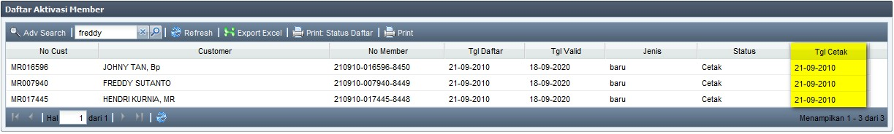
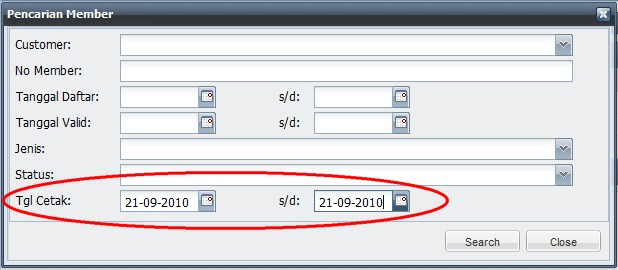
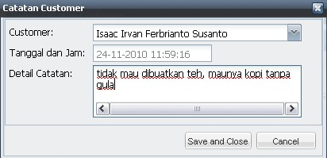
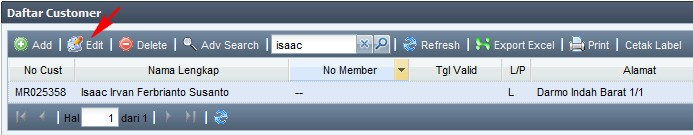
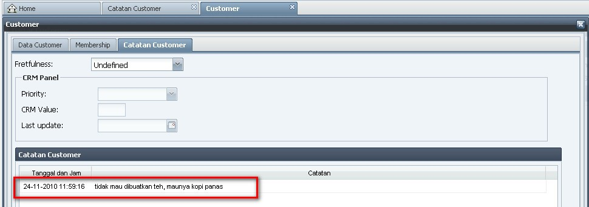

Faktur Baru
Untuk membuat Faktur Penjualan Paket baru, dapat dilakukan dengan cara:
- otomatis ketika kita membuka menu Penjualan Paket pertama kali, atau
- jika kita sedang mengedit suatu Faktur Penjualan Paket, klik salah satu tombol Save and Print, Save, atau Cancel.

Berikut urutan langkah untuk membuat Faktur Penjualan Paket:
- No Faktur biarkan saja, karena akan diinputkan secara otomatis oleh sistem.
- Pilih Customer yang melakukan transaksi
(tips: untuk memilih customer, dapat dengan mengetikkan No Customer, Nama, Alamat, ataupun No Member)

Note: No Member & Member Valid akan diinputkan secara otomatis oleh sistem
- Tanggal secara default akan terisi hari ini.
- Isikan Keterangan jika diperlukan.
- Status Dokumen secara default adalah Terbuka (yang menunjukkan bahwa faktur tersebut belum dicetak. Jika faktur sudah dicetak, maka Status Dokumen secara otomatis akan menjadi Tertutup)
- Untuk menambahkan Paket yang dibeli oleh customer, klik Add pada panel Detail Penjualan Paket

- pilih Paket yang dibeli
(tips: untuk memilih Paket, dapat dengan mengetikkan Nama atau Kode Paket)
- isikan Jumlah produk yang dibeli
- tanggal Kadaluarsa akan otomatis terisi
- pilih Jenis Diskon yang sesuai
- secara default, Diskon (%) akan mengikuti Jenis Diskon yang dipilih, namun Diskon (%) ini masih dapat diganti sesuai kebutuhan
- pilih Referal yang sesuai
(tips: untuk memilih Referal, dapat dengan mengetikkan Nama Lengkap atau Nick Name dari karyawan yang bersangkutan)
- Harga (Rp), Sub Total (Rp), Sub Tot Net (Rp) akan terisi otomatis
- klik Update setiap kali selesai menambahkan 1 detail Paket
- klik Add untuk menambahkan detail Paket kembali
- Secara default, Paket yang dibeli hanya dapat dipakai oleh Customer pemilik Paket yang namanya tercantum pada Faktur. Jika Paket diijinkan oleh Customer pemilik untuk dipakai orang lain, maka dapat ditambahkan pada tab Daftar Pemakai Paket

- Setelah selesai menambahkan detail Paket, pilih cara pembayaran yang digunakan Customer pada panel Cara Bayar

- pilih Cara Bayar yang dipakai Customer, apakah menggunakan Kartu Kredit, Kuitansi, Tunai, Cek/Giro, atau Transfer
- masukkan data-data yang dibutuhkan untuk setiap Cara Bayar, serta nominal pada field Jumlah (Rp)
(note: untuk keterangan lebih lanjut mengenai Cara Bayar, dapat dilihat pada User Manual MIS ini, di halaman Kasir --> Cara Bayar, atau klik disini)
- Pada panel kanan bawah, isikan data-data tambahan jika diperlukan:

- Tot Item otomatis terisi sesuai dengan jumlah produk yang dibeli
- Sub Total (Rp) otomatis terisi dari jumlah total dari harga produk yang dibeli, setelah diskon satuan
- isikan Diskon (%), yang akan dihitung dari Sub Total (Rp)
- isikan Voucher (Rp) dan No Voucher adalah jika customer mendapatkan diskon tambahan sejumlah Rp tertentu, yang biasanya berupa Voucher
(note: Diskon (%) dan Voucher (Rp) hanya bisa diinputkan salah satu saja, dan tidak bisa keduanya sekaligus)
- Total (Rp) otomatis terisi dari berdasarkan perhitungan Sub Total (Rp) dikurangi Diskon (%) atau Voucher (Rp)
- Total Bayar (Rp) otomatis terisi dari total Cara Bayar 1 + Cara Bayar 2 + Cara Bayar 3
- Hutang (Rp) otomatis terisi jika Total Bayar (Rp) kurang dari Total (Rp)
- klik Save untuk menyimpan Faktur, atau klik Save and Print untuk menyimpan sekaligus mencetak Faktur
- Faktur Penjualan Paket telah selesai dibuat
(note: untuk melihat daftar faktur yang telah dibuat, klik Lihat Daftar)
Copyright © 2010, IT Department of Miracle Aesthetic Clinic Group
Created with the Freeware Edition of HelpNDoc: Free HTML Help documentation generator